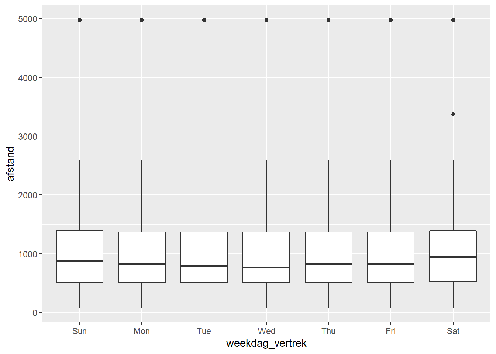
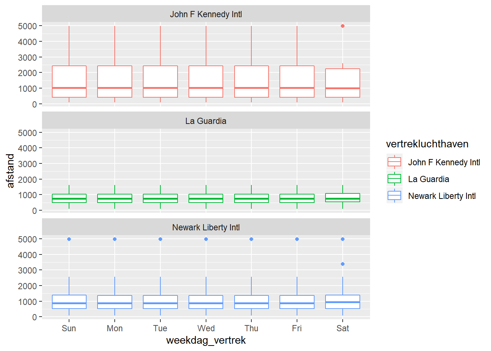
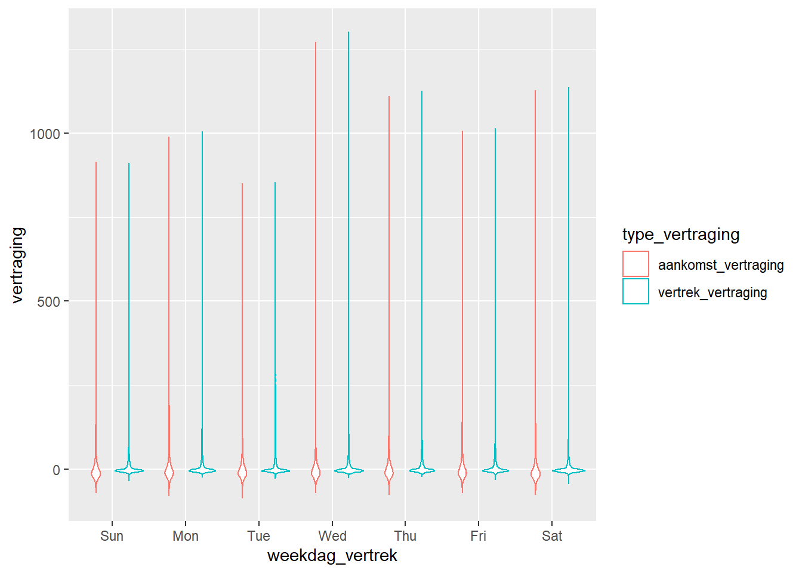
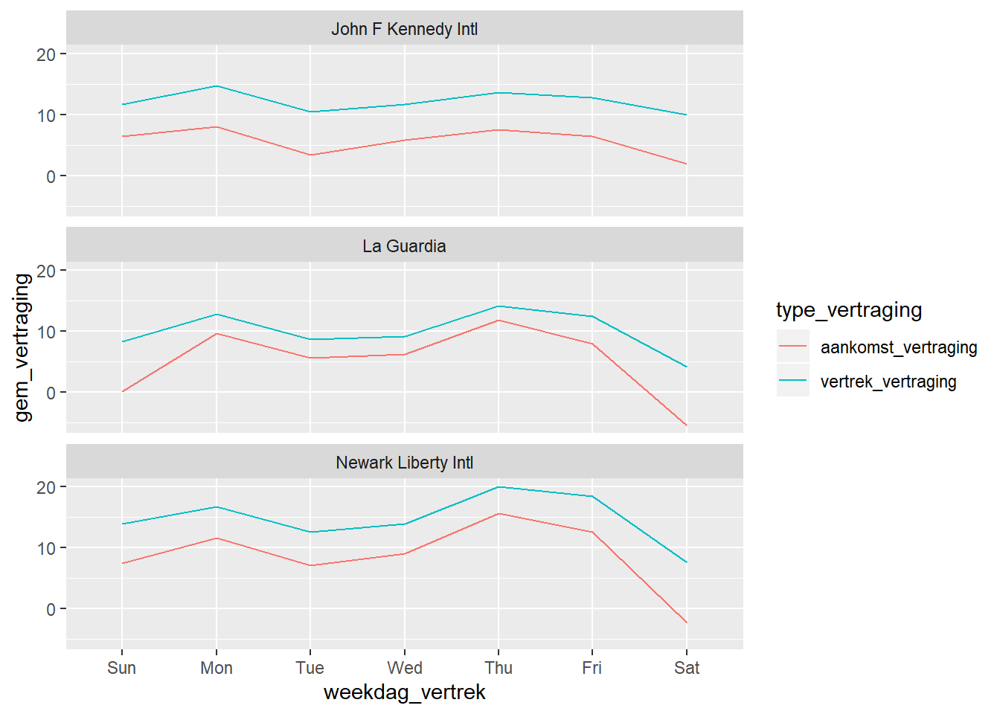

Hoofdstuk 7 Tidy Data
7.1 Inleiding
- In werkelijkheid komt data niet altijd in het geschikte formaat om de gewenste analyses op uit te voeren.
- Vaak is data verspreid over meerdere datasets en moeten we hier 1 dataframe van maken voor onze analyses.
- Soms stelt een rij niet de observatie voor die willen bestuderen (bv: één rij stelt de gegevens van één auto betrokken in een ongeval voor, terwijl we willen dat iedere rij een ongeval voorstelt met de gegevens van alle betrokken voertuigen).
- Het manipuleren van de data opdat het in het juiste formaat staat, wordt ook wel de creatie van ‘tidy data’ genoemd.
- Bestudeer secties 12.1 tot en met 12.4 en 12.6 in ‘R for Data Science’ van Grolemund en Wickham!
- Bestudeer hoofdstuk 13 in ‘R for Data Science’ van Grolemund en Wickham!
7.2 Case: NYC Vluchten 2013
7.2.1 Datasets samenvoegen
- We vertrekken van een dataset met vluchten opgestegen vanuit NYC in 2013. Hieronder een overzicht van de variabelen in de dataset.
## Observations: 319,809
## Variables: 13
## $ id <int> 1, 2, 3, 4, 5, 6, 7, 8, 9, 10, 11, 12, 13,...
## $ vertrekluchthaven <chr> "EWR", "LGA", "JFK", "LGA", "EWR", "EWR", ...
## $ aankomstluchthaven <chr> "George Bush Intercontinental", "George Bu...
## $ maatschappij <chr> "United Air Lines Inc.", "United Air Lines...
## $ tijdstip_aankomst <dttm> 2013-01-01 08:30:00, 2013-01-01 08:50:00,...
## $ vertrek_vertraging <dbl> 2, 4, 2, -6, -4, -5, -3, -3, -2, -2, -2, -...
## $ aankomst_vertraging <dbl> 11, 20, 33, -25, 12, 19, -14, -8, 8, -2, -...
## $ afstand <dbl> 1400, 1416, 1089, 762, 719, 1065, 229, 944...
## $ tijdstip_vertrek <dttm> 2013-01-01 05:17:00, 2013-01-01 05:33:00,...
## $ weekdag_vertrek <ord> Tue, Tue, Tue, Tue, Tue, Tue, Tue, Tue, Tu...
## $ week_vertrek <dbl> 1, 1, 1, 1, 1, 1, 1, 1, 1, 1, 1, 1, 1, 1, ...
## $ maand_vertrek <dbl> 1, 1, 1, 1, 1, 1, 1, 1, 1, 1, 1, 1, 1, 1, ...
## $ maanddag_vertrek <int> 1, 1, 1, 1, 1, 1, 1, 1, 1, 1, 1, 1, 1, 1, ...- We beschikken nu ook over een tweede dataset met de gegevens van de luchthavens. Hieronder een overzicht van de variabelen in deze dataset.
## Observations: 1,458
## Variables: 8
## $ faa <chr> "04G", "06A", "06C", "06N", "09J", "0A9", "0G6", "0G7", ...
## $ name <chr> "Lansdowne Airport", "Moton Field Municipal Airport", "S...
## $ lat <dbl> 41.13047, 32.46057, 41.98934, 41.43191, 31.07447, 36.371...
## $ lon <dbl> -80.61958, -85.68003, -88.10124, -74.39156, -81.42778, -...
## $ alt <dbl> 1044, 264, 801, 523, 11, 1593, 730, 492, 1000, 108, 409,...
## $ tz <dbl> -5, -6, -6, -5, -5, -5, -5, -5, -5, -8, -5, -6, -5, -5, ...
## $ dst <chr> "A", "A", "A", "A", "A", "A", "A", "A", "U", "A", "A", "...
## $ tzone <chr> "America/New_York", "America/Chicago", "America/Chicago"...- Als we deze datasets vergelijken zien we een mogelijke relatie tussen beiden.
- In de oorspronkelijke dataset stelt iedere rij een vlucht voor en wordt de vertrekluchthaven voorgesteld door een 3-letterige code.
- In de airports-dataset stelt iedere rij een luchthaven voor en vinden we een 3-letterige code terug in de kolom ‘faa’.
- We willen nu graag deze twee datasets aan elkaar koppelen door de gegevens van de vertrekluchthavens uit de airports-dataset te halen en toe te voegen aan iedere vlucht.
- Alvorens we dit kunnen doen, moeten we eerst controleren of de faa-code in de airports-dataset uniek is.
- Dit is een essentiële vereiste om de gegevens van de airports-dataset te kunnen toevoegen aan de oorspronkelijke dataset.
- Indien er bijvoorbeeld 2 luchthavens in de airports-dataset zouden zitten met faa-code ‘EWR’, dan zou R niet kunnen achterhalen van welke luchthaven de gegevens moeten worden toegevoegd aan de vluchten met als vertrekluchthaven ‘EWR’.
- In zulke gevallen gaat R de vlucht dupliceren en iedere kopie (van de vlucht) koppelen aan een andere luchthaven uit de airports-dataset met faa-code EWR.
## # A tibble: 0 x 2
## # ... with 2 variables: faa <chr>, n <int>- Uit bovenstaande analyse blijkt dat er geen twee rijen zijn in de airports-dataset met dezelfde faa-code.
- We kunnen nu de gegevens van de airports-dataset toevoegen aan het oorspronkelijk dataframe. We doen dit met behulp van een left_join() en geven aan via welke variabelen de link gelegd moet worden.
## Observations: 319,809
## Variables: 20
## $ id <int> 1, 2, 3, 4, 5, 6, 7, 8, 9, 10, 11, 12, 13,...
## $ vertrekluchthaven <chr> "EWR", "LGA", "JFK", "LGA", "EWR", "EWR", ...
## $ aankomstluchthaven <chr> "George Bush Intercontinental", "George Bu...
## $ maatschappij <chr> "United Air Lines Inc.", "United Air Lines...
## $ tijdstip_aankomst <dttm> 2013-01-01 08:30:00, 2013-01-01 08:50:00,...
## $ vertrek_vertraging <dbl> 2, 4, 2, -6, -4, -5, -3, -3, -2, -2, -2, -...
## $ aankomst_vertraging <dbl> 11, 20, 33, -25, 12, 19, -14, -8, 8, -2, -...
## $ afstand <dbl> 1400, 1416, 1089, 762, 719, 1065, 229, 944...
## $ tijdstip_vertrek <dttm> 2013-01-01 05:17:00, 2013-01-01 05:33:00,...
## $ weekdag_vertrek <ord> Tue, Tue, Tue, Tue, Tue, Tue, Tue, Tue, Tu...
## $ week_vertrek <dbl> 1, 1, 1, 1, 1, 1, 1, 1, 1, 1, 1, 1, 1, 1, ...
## $ maand_vertrek <dbl> 1, 1, 1, 1, 1, 1, 1, 1, 1, 1, 1, 1, 1, 1, ...
## $ maanddag_vertrek <int> 1, 1, 1, 1, 1, 1, 1, 1, 1, 1, 1, 1, 1, 1, ...
## $ name <chr> "Newark Liberty Intl", "La Guardia", "John...
## $ lat <dbl> 40.69250, 40.77725, 40.63975, 40.77725, 40...
## $ lon <dbl> -74.16867, -73.87261, -73.77893, -73.87261...
## $ alt <dbl> 18, 22, 13, 22, 18, 18, 22, 13, 22, 13, 13...
## $ tz <dbl> -5, -5, -5, -5, -5, -5, -5, -5, -5, -5, -5...
## $ dst <chr> "A", "A", "A", "A", "A", "A", "A", "A", "A...
## $ tzone <chr> "America/New_York", "America/New_York", "A...- Bovenstaande output laat zien dat 7 kolommen zijn toegevoegd aan de oorspronkelijke dataset.
- Merk op dat de faa-kolom van het airports-dataframe niet is toegevoegd. Dit is niet nodig aangezien we in de join-functie hadden aangegeven dat deze kolom overeenkwam met de kolom vertrekluchthaven uit de oorspronkelijke dataset.
- Controleer ook altijd of het aantal observaties niet gewijzigd is, daar dit vaak wijst op een fout in de join. In dit geval is het aantal observaties niet veranderd.
- In een volgende stap verwijderen we een aantal kolommen die we verder niet nodig gaan hebben en veranderen we de kolom ‘name’ in ‘vertrekluchthaven’. Zoals je in het resultaat kan zien bevat onze nieuwe dataset nu de volledige naam van de vertrekluchthaven en niet enkel de faa-code.
## Observations: 319,809
## Variables: 13
## $ id <int> 1, 2, 3, 4, 5, 6, 7, 8, 9, 10, 11, 12, 13,...
## $ aankomstluchthaven <chr> "George Bush Intercontinental", "George Bu...
## $ maatschappij <chr> "United Air Lines Inc.", "United Air Lines...
## $ tijdstip_aankomst <dttm> 2013-01-01 08:30:00, 2013-01-01 08:50:00,...
## $ vertrek_vertraging <dbl> 2, 4, 2, -6, -4, -5, -3, -3, -2, -2, -2, -...
## $ aankomst_vertraging <dbl> 11, 20, 33, -25, 12, 19, -14, -8, 8, -2, -...
## $ afstand <dbl> 1400, 1416, 1089, 762, 719, 1065, 229, 944...
## $ tijdstip_vertrek <dttm> 2013-01-01 05:17:00, 2013-01-01 05:33:00,...
## $ weekdag_vertrek <ord> Tue, Tue, Tue, Tue, Tue, Tue, Tue, Tue, Tu...
## $ week_vertrek <dbl> 1, 1, 1, 1, 1, 1, 1, 1, 1, 1, 1, 1, 1, 1, ...
## $ maand_vertrek <dbl> 1, 1, 1, 1, 1, 1, 1, 1, 1, 1, 1, 1, 1, 1, ...
## $ maanddag_vertrek <int> 1, 1, 1, 1, 1, 1, 1, 1, 1, 1, 1, 1, 1, 1, ...
## $ vertrekluchthaven <chr> "Newark Liberty Intl", "La Guardia", "John...7.3 Data in een lang formaat plaatsen (voor visuele analyses)
- Bij een bivariate visualisatie heb je steeds het basisprincipe dat je de relatie tussen twee variabelen wenst weer te geven.
- Bij een multivariate visualisatie ga je vaak weergeven hoe deze relatie verandert in functie van een derde variabele.
- Deze derde variabele is vaak categorisch en de verschillende categorieën stellen hierbij groeperingen van de observaties voor waarvoor je de relatie tussen X en Y wenst weer te geven.
- Je wil bijvoorbeeld initieel de relatie tussen weekdag en afstand van de vluchten weergeven. Hiervoor kan je een bivariate plot maken waarbij X categorisch is en Y continu. Een mogelijkheid hiervoor is een boxplot.
- In een volgende stap kan je de relatie tussen afstand en weekdag opsplitsen per luchthaven. Je wil dus weten hoe deze relatie verschilt tussen diverse luchthavens. Hiervoor gebruik je de categorische variabele ‘vertrekluchthaven’ en kan je bijvoorbeeld de kleur van de boxplot koppelen aan de vertrekluchthaven of aparte ‘facets’ maken voor iedere luchthaven.
- Hieronder zie je de bijhorende plots.


- Stel nu dat je het effect wenst te weten van de weekdag van vertrek op de vertraging van een vlucht, maar je wil hierbij onderscheid maken tussen vertrek- en aankomstvertraging.
- Volgens bovenstaande aanpak zou je dan een Y-variabele moeten hebben die de vertraging meet en een Z-variabele die het type van vertraging aangeeft (aankomst of vertrek).
- Onze dataset is echter anders opgebouwd. In de beschikbare data is de vertraging van een vlucht opgeslagen met behulp van twee aparte variabelen, namelijk vertrek- en aankomstvertraging. Dit blijkt uit onderstaande tabel.
## # A tibble: 319,809 x 5
## id vertrekluchthav~ vertrek_vertrag~ aankomst_vertra~ weekdag_vertrek
## <int> <chr> <dbl> <dbl> <ord>
## 1 1 Newark Liberty ~ 2 11 Tue
## 2 2 La Guardia 4 20 Tue
## 3 3 John F Kennedy ~ 2 33 Tue
## 4 4 La Guardia -6 -25 Tue
## 5 5 Newark Liberty ~ -4 12 Tue
## 6 6 Newark Liberty ~ -5 19 Tue
## 7 7 La Guardia -3 -14 Tue
## 8 8 John F Kennedy ~ -3 -8 Tue
## 9 9 La Guardia -2 8 Tue
## 10 10 John F Kennedy ~ -2 -2 Tue
## # ... with 319,799 more rows- We moeten de data dus omzetten zodat het type vertraging niet gecodeerd wordt als aparte variabelen, maar door middel van 1 categorische variabele.
- Hiervoor kunnen we de gather() functie hanteren. Deze functie zal een set van variabelen (in dit geval ‘vertrek_vertraging’ en ‘aankomst_vertraging’) transformeren naar 2 variabelen, namelijk een key-variabele en een value-variabele.
- De key-variabele is een categorische variabele en de categorieën komen overeen met de variabelenamen in onze set van variabelen die we wensen te transformeren. In ons geval zijn dit dus de categorieën ‘vertrek_vertraging’ en ‘aankomst_vertraging’.
- De value-variabele bevat de bijhorende waarde uit de oorspronkelijke dataset.
- De gather() functie bestaat uit 3 delen.
- Eerst vermeld je alle variabelen die je wenst te vervangen.
- Vervolgens geef je de naam van de nieuwe key-variabele.
- Tenslotte geef je de naam van de nieuwe value-variabele.
## # A tibble: 639,618 x 5
## id vertrekluchthaven weekdag_vertrek type_vertraging vertraging
## <int> <chr> <ord> <chr> <dbl>
## 1 1 Newark Liberty Intl Tue vertrek_vertraging 2
## 2 1 Newark Liberty Intl Tue aankomst_vertraging 11
## 3 2 La Guardia Tue vertrek_vertraging 4
## 4 2 La Guardia Tue aankomst_vertraging 20
## 5 3 John F Kennedy Intl Tue vertrek_vertraging 2
## 6 3 John F Kennedy Intl Tue aankomst_vertraging 33
## 7 4 La Guardia Tue vertrek_vertraging -6
## 8 4 La Guardia Tue aankomst_vertraging -25
## 9 5 Newark Liberty Intl Tue vertrek_vertraging -4
## 10 5 Newark Liberty Intl Tue aankomst_vertraging 12
## # ... with 639,608 more rows- Merk op dat het aantal rijen nu verdubbeld is. Dit komt omdat je nu voor zowel vertrek- als aankomstvertraging een aparte rij hebt gecreëerd.
- Hierdoor krijg je een andere definitie van de observatie die in een rij staat. In de oorspronkelijke dataset was iedere rij (observatie) een vlucht vanuit NYC in 2013. In de nieuwe dataset stelt iedere rij het vertrek of de aankomst van een vlucht vanuit NYC in 2013 voor!
- Indien je dus de gather() functie hanteert gaat het aantal rijen toenemen. Het aantal kolommen zal afnemen indien de variabelenset, die je wenst te transformeren, uit meer dan 2 variabelen bestaat.
- Hierdoor krijg je een dataset die minder breed is en vooral langer. Daarom wordt dit het lange formaat genoemd.
- Data in een lang formaat zijn voornamelijk nuttig om visualisaties te realiseren met ggplot.
- Met dit lange formaat kunnen we de relatie tussen weekdag van vertrek en de vertraging, uitgesplitst volgens vertrek- of aankomstvertraging, visualiseren.

- Indien we de relatie tussen we weekdag en de gemiddelde vertraging, uitgesplitst volgens vertragingtype, wensen te visualiseren, moeten we eerst de gemiddelde vertraging berekenen.
## # A tibble: 42 x 4
## # Groups: vertrekluchthaven, type_vertraging [6]
## vertrekluchthaven type_vertraging weekdag_vertrek gem_vertraging
## <chr> <chr> <ord> <dbl>
## 1 John F Kennedy Intl aankomst_vertraging Sun 6.39
## 2 John F Kennedy Intl aankomst_vertraging Mon 7.99
## 3 John F Kennedy Intl aankomst_vertraging Tue 3.34
## 4 John F Kennedy Intl aankomst_vertraging Wed 5.86
## 5 John F Kennedy Intl aankomst_vertraging Thu 7.56
## 6 John F Kennedy Intl aankomst_vertraging Fri 6.49
## 7 John F Kennedy Intl aankomst_vertraging Sat 1.96
## 8 John F Kennedy Intl vertrek_vertraging Sun 11.7
## 9 John F Kennedy Intl vertrek_vertraging Mon 14.7
## 10 John F Kennedy Intl vertrek_vertraging Tue 10.5
## # ... with 32 more rows
7.4 Data in een breed formaat plaatsen (voor overzichtelijke tabellen)
- Voor de laatste visualisatie hebben we een dataset gecreëerd met gemiddelde vertragingen per vertrekluchthaven, weekdag van vertrek en type vertraging.
| weekdag_vertrek | vertrekluchthaven | type_vertraging | gem_vertraging |
|---|---|---|---|
| Sun | John F Kennedy Intl | aankomst_vertraging | 6.39 |
| Sun | John F Kennedy Intl | vertrek_vertraging | 11.70 |
| Sun | La Guardia | aankomst_vertraging | 0.15 |
| Sun | La Guardia | vertrek_vertraging | 8.33 |
| Sun | Newark Liberty Intl | aankomst_vertraging | 7.44 |
| Sun | Newark Liberty Intl | vertrek_vertraging | 14.01 |
| Mon | John F Kennedy Intl | aankomst_vertraging | 7.99 |
| Mon | John F Kennedy Intl | vertrek_vertraging | 14.74 |
| Mon | La Guardia | aankomst_vertraging | 9.58 |
| Mon | La Guardia | vertrek_vertraging | 12.86 |
| Mon | Newark Liberty Intl | aankomst_vertraging | 11.67 |
| Mon | Newark Liberty Intl | vertrek_vertraging | 16.73 |
| Tue | John F Kennedy Intl | aankomst_vertraging | 3.34 |
| Tue | John F Kennedy Intl | vertrek_vertraging | 10.47 |
| Tue | La Guardia | aankomst_vertraging | 5.60 |
| Tue | La Guardia | vertrek_vertraging | 8.63 |
| Tue | Newark Liberty Intl | aankomst_vertraging | 7.15 |
| Tue | Newark Liberty Intl | vertrek_vertraging | 12.57 |
| Wed | John F Kennedy Intl | aankomst_vertraging | 5.86 |
| Wed | John F Kennedy Intl | vertrek_vertraging | 11.71 |
| Wed | La Guardia | aankomst_vertraging | 6.23 |
| Wed | La Guardia | vertrek_vertraging | 9.15 |
| Wed | Newark Liberty Intl | aankomst_vertraging | 9.02 |
| Wed | Newark Liberty Intl | vertrek_vertraging | 13.95 |
| Thu | John F Kennedy Intl | aankomst_vertraging | 7.56 |
| Thu | John F Kennedy Intl | vertrek_vertraging | 13.65 |
| Thu | La Guardia | aankomst_vertraging | 11.89 |
| Thu | La Guardia | vertrek_vertraging | 14.10 |
| Thu | Newark Liberty Intl | aankomst_vertraging | 15.60 |
| Thu | Newark Liberty Intl | vertrek_vertraging | 20.10 |
| Fri | John F Kennedy Intl | aankomst_vertraging | 6.49 |
| Fri | John F Kennedy Intl | vertrek_vertraging | 12.76 |
| Fri | La Guardia | aankomst_vertraging | 7.97 |
| Fri | La Guardia | vertrek_vertraging | 12.45 |
| Fri | Newark Liberty Intl | aankomst_vertraging | 12.55 |
| Fri | Newark Liberty Intl | vertrek_vertraging | 18.49 |
| Sat | John F Kennedy Intl | aankomst_vertraging | 1.96 |
| Sat | John F Kennedy Intl | vertrek_vertraging | 9.97 |
| Sat | La Guardia | aankomst_vertraging | -5.44 |
| Sat | La Guardia | vertrek_vertraging | 4.19 |
| Sat | Newark Liberty Intl | aankomst_vertraging | -2.22 |
| Sat | Newark Liberty Intl | vertrek_vertraging | 7.63 |
- Om snel verbanden te zoeken en te evalueren is dit formaat niet erg handig. Voor zulke situaties kan je best voor een breed formaat opteren.
- Hierbij moet je 2 variabelen selecteren: de key-variabele en de value-variabele.
- De key-variabele is altijd een categorische variabele en de value-variabele kan zowel categorisch als continu zijn.
- Voor ieder level van de categorische key-variabele zal er een aparte kolom aangemaakt worden.
- Je kan een dataset van lang naar breed formaat omzetten met behulp van de spread() functie.
df_long_summary %>%
spread(key=weekdag_vertrek, value=gem_vertraging) %>%
arrange(vertrekluchthaven, type_vertraging)| vertrekluchthaven | type_vertraging | Sun | Mon | Tue | Wed | Thu | Fri | Sat |
|---|---|---|---|---|---|---|---|---|
| John F Kennedy Intl | aankomst_vertraging | 6.39 | 7.99 | 3.34 | 5.86 | 7.56 | 6.49 | 1.96 |
| John F Kennedy Intl | vertrek_vertraging | 11.70 | 14.74 | 10.47 | 11.71 | 13.65 | 12.76 | 9.97 |
| La Guardia | aankomst_vertraging | 0.15 | 9.58 | 5.60 | 6.23 | 11.89 | 7.97 | -5.44 |
| La Guardia | vertrek_vertraging | 8.33 | 12.86 | 8.63 | 9.15 | 14.10 | 12.45 | 4.19 |
| Newark Liberty Intl | aankomst_vertraging | 7.44 | 11.67 | 7.15 | 9.02 | 15.60 | 12.55 | -2.22 |
| Newark Liberty Intl | vertrek_vertraging | 14.01 | 16.73 | 12.57 | 13.95 | 20.10 | 18.49 | 7.63 |